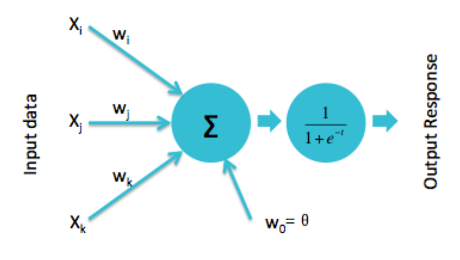
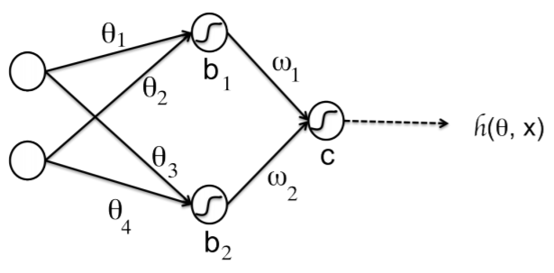
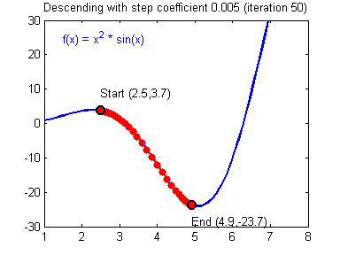

Machine Learning and Neural Networks
Roberto Santana and Unai Garciarena
Department of Computer Science and Artificial Intelligence
University of the Basque Country
Neural Network Paradigms: Table of Contents
Multilayer perceptron

Characteristics
- Provide a general framework for representing non-linear functional mappings between a set of input variables and a set of output variables.
- Mainly used for supervised ML. It extends the representation capabilities of the perceptron.
- Contrary to the perceptron, it includes one or more hidden layers.
- Different activation functions can added to the network.
C. M. Bishop. Neural Networks for Pattern Recognition. Oxford University Press. 2005.
R. Rojas. Neural networks: a systematic introduction. Springer Science & Business Media. Chapter 7. 2013.
Perceptron
Learning
- Non-linear activation units are introduced.
- Weights are updated as:
\[ w_i(t+1) = w_i(t) + \left (d_j -y_j(t) \right) x_{j,i}, \]
where \( d_j \) is the desired output
Modern perceptron

H. Wang, B. Raj, and E. P. Xing. On the Origin of Deep Learning. arXiv preprint arXiv:1702.07800. 2017.
Multi-Layer perceptron
Properties
- Perceptron: Single neuron.
- One-layer neural network: Putting perceptrons side by side.
- Multi-layer neural network (MLP): Stacking one one-layer NN upon the other.
- Universal approximation property: An MLP can represent any function.
K. Kawaguchi. A multithreaded software model for backpropagation neural network applications. Ph. D. Thesis. 2000.
Multi-Layer perceptron
-

Network function
\[ \begin{align} h({\bf{x}}) =& g \left ( w_1 h_1({\bf{x}}) + w_2 h_2({\bf{x}}) + c \right ) \\ =& g \left ( w_1 g(\theta_1 x_1 + \theta_2 x_2 + b_1) + w_2 g(\theta_3 x_1 + \theta_4 x_2 + b_2) + c \right ) \end{align} \]
Q. V. Le. A Tutorial on Deep Learning. Part 1: Nonlinear Classifiers and The Backpropagation Algorithm. 2015.
Multi-Layer perceptron

A. K. Jain, J. Mao, and K. M. Mohiuddin. Figure. Artificial neural networks: A tutorial. Computer. Vol. 29 No. 3. Pp. 31-44. 1996.
Multi-Layer perceptron
Properties
- Boolean approximation: An MLP of one hidden layer can represent any boolean function exactly.
- Continuous approximation: An MLP of one hidden layer can approximate any bounded continuous function with arbitrary accuracy.
- Arbitrary approximation: An MLP of two hidden layers can approximate any function with arbitrary accuracy.
A simple model:
\(y = w x \)
- We have a regression problem and want to learn a model.
- This means finding the optimal parameter \(w\).
- We use the squared error as loss function.
Evaluating the quality of a model
| Input | True Model | Output | Abs. Error | Square Error |
|---|---|---|---|---|
| x | M(x)=2x | g(x) | |g(x)-M(x)| | (g(x)-M(x))^2 |
| 0 | 0 | 0 | 0 | 0 |
| 1 | 2 | 3 | 1 | 1 |
| 2 | 4 | 6 | 2 | 4 |
| 3 | 6 | 9 | 3 | 9 |
| 4 | 8 | 12 | 4 | 16 |
| 5 | 10 | 15 | 5 | 25 |
| All | 15 | 55 |
Evaluating the quality of a model
| Input(x) | True Model | W=3 | SE (W=3) | SE (W=3.02) | SE (W=2.98) |
|---|---|---|---|---|---|
| 0 | 0 | 0 | 0 | 0 | 0 |
| 1 | 2 | 3 | 1 | 1.04 | 0.96 |
| 2 | 4 | 6 | 4 | 4.16 | 3.84 |
| 3 | 6 | 9 | 9 | 9.36 | 8.64 |
| 4 | 8 | 12 | 16 | 16.64 | 15.36 |
| 5 | 10 | 15 | 25 | 26.01 | 24.01 |
| All | 55 | 57.22 | 52.82 |
Error function

Derivative
- Because the error function is continuous, a small change in \(x\) can only result in a small change in \(y\).
- This could be expressed as:
\[ f(x + \epsilon_x) = y + \epsilon_y \] - Because the function is smooth, when \(\epsilon_x\) is small enough:
\[ f(x + \epsilon_x) = y + a * \epsilon_x \] - The previous linear approximation is valid, only in the \(\epsilon\)-neighborhood of \(x\), i.e, if we are close enough to \(x\).
- The slope of this linear approximation is called the derivative.
Derivative

Derivative
- A positive slope means the function increases as we increase \(x\).
- Similarly, a negative slope negative slope means the function increases when we decrease \(x\).
- If the derivative is zero, there is a local optimum.
- Therefore, a good strategy to find the optimum is to move \(x\) in the oppossite direction to the sign of its derivative at the current point.
- This is what gradient descent, a popular optimization algorithm, uses to implement its update rule as:
\[ w = w - \mu f'(w) \] where \( \mu \) is a learning rate parameter.
Gradient descent
-

Gradient
Definition and interpretation
The gradient of a function \( J(\theta_1,\dots,\theta_d) \) is a vector-value function defined as:
\[
\nabla J(\theta_1,\dots,\theta_d) = < \frac{\partial J}{\partial \theta_1}(\theta_1,\dots,\theta_d), \dots,\frac{\partial J}{\partial \theta_d}(\theta_1,\dots,\theta_d)>
\]
- The gradient of a multi-variable function has a component for each direction.
- The gradient points in the direction of greatest increase.
Gradient descent
Finding the optimum of the loss function
Gradient descent: A local minimization method based on updating the parameters of a function \( J(\theta_1,\dots,\theta_d) \) in the opposite direction to its gradient.
A parameter \( \mu \) is used to indicate the learning rate of the algorithm (the size of the step taken to reach to local optimum)
S. Ruder. An overview of gradient descent optimization algorithms. arXiv preprint arXiv:1609.04747. 2016.
Multi-Layer perceptron
What about the weights of hidden layers?
Network function
\[ \begin{align} h({\bf{x}}) =& g \left ( w_1 h_1({\bf{x}}) + w_2 h_2({\bf{x}}) + c \right ) \\ =& g(w_1 g(\theta_1 x_1 + \theta_2 x_2 + b_1) \\ +& w_2 g(\theta_3 x_1 + \theta_4 x_2 + b_2) + c) \end{align} \]
What is needed?
- We need a way to update the weights of the hidden layers (gradient descent?).
- For that we would need how to compute the gradient of the NN error with respect to each weight.
MLP
Q. V. Le. A Tutorial on Deep Learning. Part 1. Nonlinear classifiers and the backpropagation algorithm. 2015.
Derivative of a composite function
- Since our network function is a a composite function, we need to compute its derivative applying the chain rule.
- Chain rule:
\[ h'(x)= \frac{d}{dx}[g(f(x))] = g'(f(x)) f'(x) \]
Backpropagation
Characteristics
- Backpropagation provides a computationally efficient method for evaluating the partial derivatives of all the weights of the neural network with respect to the output.
- Gradients are computed by first estimating the error in each layer of the network.
- Gradients are then used by the optimization algorithms (i.e., variants of gradient descent) to update the weights incrementally.
- Backpropagation reuses the errors of the outer (closer to the output) layers to compute the errors of the inner layers in a more efficient way.
Backpropagation
Steps
- Feed-forward computation: The network is used for processing the inputs and the error between predictions and target values is computed.
- Backpropagation of the error: The error is backpropagated through the network. For every weight, the partial derivatives are computed.
- Weight updates: The partial derivatives are used to update the weights.
MLP Backpropagation

A. K. Jain, J. Mao, and K. M. Mohiuddin. Figure. Artificial neural networks: A tutorial. Computer. Vol. 29 No. 3. Pp. 31-44. 1996.
Multi-Layer perceptron
Backpropagation
Recursive computation
- Perform a feedforward pass to compute \( h^1, h^2, h^3, \dots, h^L \).
- For the output layer compute: \[ \delta_1^L = 2(h^L-y) g' \left( \sum_{j=1}^{S_{L-1}} \theta_{1j}^{L-1}h_j^{L-1}+b_1^{L-1} \right) \]
- Perform a backward pass for \( l = L-1, L-2, \dots, 2. \; \; \) For each neuron \(i\) in layer \(l\), compute: \[ \delta_i^L = \left( \sum_{j=1}^{S_{l+1}} \theta_{ji}^{l} \delta_j^{l+1} \right) g' \left( \sum_{j=1}^{S_{l-1}} \theta_{ij}^{l-1}h_j^{l-1}+b_i^{l-1} \right) \]
- The desired partial derivatives can be computed as \( \Delta \theta_{ij}^{l} = h_j^{l} \delta_i^{l+1} \) and \( \Delta b_i^{l} = \delta_i^{l+1} \).
Notation
\( h(x) \): decision function
\( g \): activation function
\( \theta^l_{ij} \): weight at layer \(l\)-th between input \(j\)-th and neuron \(i\)-th in layer \((l+1)\)-th
\( b_i \): bias of neuron \( i \)
\( s_l \): number of neurons in the layer
Optimization methods for deep neural networks
Finding the optimum of the loss function
Optimization is involved in several aspects of machine learning algorithms.
Of all the optimization problems involved in deep learning, the most difficult is neural network training.
Optimization is also relevant to the efficiency of the DNN learning algorithm.
We focus on the optimization problem of finding the parameters \( \Theta \) of a neural network that significantly reduce a (possibly regularized) loss function \( J(\Theta) \).
I. Goodfellow and Y. Bengio and A. Courville. Deep Learning. Chapter 8. Optimization for Training Deep Models. MIT Press. 2016.
Gradient descent
Finding the optimum of the loss function
Gradient descent algorithms can be grouped in three classes according to the way the gradient is used for the updates:
- Batch gradient descent.
- Stochastic gradient descent (SGD).
- Mini-batch gradient descent.
S. Ruder. An overview of gradient descent optimization algorithms. arXiv preprint arXiv:1609.04747. 2016.
Gradient descent variants
Batch gradient descent
To perform one parameter update, computes the gradient of \(J\) using all the points the dataset as:
\[
\theta = \theta - \epsilon \nabla_{\theta} J(\theta)
\]
- Guaranteed to converge to the global minimum for convex functions and to local minimum for non-convex functions.
- Not very efficient since for performing a single update the gradients of the whole dataset are evaluated.
Gradient descent variants
Stochastic gradient descent (SGD)
A parameter update is performed for each point \(x^i\) and label \(y^i\) as:
\[
\theta = \theta - \epsilon \nabla_{\theta} J(\theta;x^i,y^i)
\]
- Usually much faster than batch gradient descent.
- Can be used to learn online.
- Convergence to local minimum is not guaranteed.
Gradient descent variants
Mini-batch gradient descent
A parameter update is performed for each mini-batch of \(n\) points \( (x^i,\dots,x^{i+n})\) and labels \((y^i,\dots,y^{i+n})\) as:
\[
\theta = \theta - \epsilon \nabla_{\theta} J(\theta; (x^i,\dots,x^{i+n}),(y^i,\dots,y^{i+n}))
\]
- Combines characteristics of batch gradient descent and SGD.
- Can make use of highly optimized matrix optimizations.
- Nevertheless, it does not guarantee a good convergence.
- Very sensitive to the learning rate \( \epsilon \).
- It can be trapped in local optima, particularly saddle points.
(Mini-batch) stochastic gradient descent

I. Goodfellow and Y. Bengio and A. Courville. Deep Learning. Chapter 8. Optimization for Training Deep Models. MIT Press. 2016.
Advanced gradient descent methods
Momentum
- A fraction \( \alpha \) of the update vector of the past time step is added to the current vector as:
\[ v_t = \alpha v_{t-1} - \epsilon \nabla_{\theta} J(\theta) \\ \theta = \theta + v_t \] - Helps accelerate SGD in the relevant directions and dampens oscillations.
- The larger \(\alpha \) is relative to \(\epsilon\), the the more previous gradientes affect the current direction.
Momentum
I. Goodfellow and Y. Bengio and A. Courville. Deep Learning. Chapter 8. Optimization for Training Deep Models. MIT Press. 2016.
Advanced gradient descent methods
Nesterov accelerated gradient (NAG)
- Computes an approximate prediction of the parameters in order to calculate the gradient w.r.t. the approximate future position of the parameters.
- The updates are defined as:
\[ v_t = \alpha v_{t-1} - \epsilon \nabla_{\theta} J(\theta + \alpha v_{t-1}) \\ \theta = \theta + v_t \]
Nesterov accelerated gradient (NAG)

I. Goodfellow and Y. Bengio and A. Courville. Deep Learning. Chapter 8. Optimization for Training Deep Models. MIT Press. 2016.
Gradient descent variants
Other advanced gradient descent methods
Adagrad
Adadelta
RMSprop
Adam
AdaMax
Nadam
Characteristics
- Adapt the learning rate of parameters (similar to annealing schedules).
- Can use a different learning rate for each parameter.
- Some restrict the window of accumulated past gradients to some fixed size \( w \).
- Some keep exponentially decaying average of past gradients.
Adagrad
I. Goodfellow and Y. Bengio and A. Courville. Deep Learning. Chapter 8. Optimization for Training Deep Models. MIT Press. 2016.
Gradient optimization methods


Images credit: Alec Radford.
Gradient optimization methods

Images credit: Alec Radford.
Competitive learning
Objective
- The goal of of competitive learning is to group the data by forming clusters.
- It is expected that the similarities of instances within the same group found by the network is as great as possible.
- The differences between instances in different classes is as great as possible.
- Generally, no label are used in training the network (i.e., unsupervised learning).
Characteristics
- A layer of neurons that are identical except that their weights are different.
- Neurons compete amongst themselves to be activated.
- Only one neuron is activated at each time (winner-takes-all neuron).
- The learning mechanism strengths the mapping between certain neurons and particular inputs.
- They are used for data mining, data visualization, dimensionality reduction and exploratory data analysis.
Competitive learning
Characteristics
- The learning rule is a variant of Hebbian learning (with weight decay).
- A potential problem is that some neurons may continue to gain the competition while other neurons are never selected.
Typical learning
- The output of all neurons is computed as
\[ y_i = \sum_{j} w_{i,j} x_j, \forall \; i \] - Then, the weights for the winning neuron \(i\) are updated as: \[ \Delta w_{i,j} = \eta (x_j - w_{i,j}) \]
and the winner neuron is computed as the one whose prediction is the best.
Self Organizing Map (SOM)
Cortical sensory homunculus


By OpenStax College - Anatomy & Physiology, Connexions Web site. http://cnx.org/content/col11496/1.6/, Jun 19, 2013., CC BY 3.0, Link
By Mpj29 (Own work) [CC BY-SA 4.0], via Wikimedia Commons
Self Organizing Map (SOM)
Cortical maps
- In the cortex, neurons that process information about sensor and motor commands of a common anatomical region of the body share a similar location.
- The extensions of the brain regions dedicated to process sensory information is different according to the part of the body.
- For example, a higher proportion of neurons is devoted to process data from the hands.
By OpenStax College - Anatomy & Physiology, Connexions Web site. http://cnx.org/content/col11496/1.6/, Jun 19, 2013., CC BY 3.0, Link
Neural Networks
Self Organizing Map (SOM)
Network architecture

Characteristics
- Mainly applied for clustering and dimensionality reduction of high-dimensional data.
- Also used as a visualization tool.
- In the reduced space, it retains the topological similarity of data points.
- In most applications, a 2-dimensional lattice-like , representation is learned.
- The network self-organizes depending on the input data.
T. Kohonen. The self-organizing map. Proceedings of the IEEE, 78(9):1464--1480. 1990.
Self Organizing Map (SOM)
Topographic maps
- A feature map uses the topological (physical) organization of the neurons to model features of the input space.
- It is expected that if two inputs are close in the feature space, then the two neurons that respond (fire) to these inputs will be close in the layout of the neural network.
- Similarly, if two neurons that are close in the neural network, fire to two different inputs, then these inputs are close in the feature space.
SOM simulation 3D
SOM simulation 2D
SOM simulation 2D TSP
Kohonen network

Characteristics
- It is a particular type of SOM.
- One input layer and a computational layer of neurons.
- Neurons are arranged in rows and columns.
- All neurons in the computational layer are connected to all input nodes
Kohonen Networks
Initialization and competition
- The synaptic weight vector of each neuron has the same dimension as the input space: \( w_j = (w_{j,1},w_{j,2},\dots,w_{j,n}) \).
- \( i(x) \) is the neuron that best matches the input vector \(x\).
- The particular neuron that satisfies this condition is called the best matching or winning neuron.
- The winning neuron is determined using a discriminant function that, for all \(j\) computes the distance between \(w_j\) and the input \(x\).
Main steps of the learning algorithm
- Initialization
- Competition
- Cooperation
- Adaptation
Kohonen Networks
Cooperation
- Lateral interaction : A network that is firing tends to excite the neurons in its immediate neighborhood more than those farther away.
- A topological neighborhood \(h_{j,i}\) centered around the winning neuron \(i\) and encopassing excited neuron \(j\) is defined.
- The lateral distance between \(i\) and \(j\) is \(d_{j,i}\).
- Then \(h_{j,i}\) is a function of the lateral distance.
Main steps of the learning algorithm
- Initialization
- Competition
- Cooperation
- Adaptation
Kohonen Networks
Cooperation and adaptation
- A topological neighborhood that decays with the lateral distance \( S_{i,j} \) is defined in the grid of neurons as: \[ h_{j,i(x)} = e^{\frac{-d^2_{j,i(x)}}{2\sigma^2}} \]
where \( \sigma \) is the size of the neighborhood.
- Neighbors to the winning neuron have their weights updated as: \[ \Delta w_{j} = \eta(t) \cdot h_{j,i(x)} \cdot (x - w_{j}) \]
where the learning rate \(\eta\) depends on time .
Initialization
- All weights \(w_{j}\) are randomly initialized.
Competition
- For a given input \( x \), the winning neuron \(i(x)\) is computed
\[ i(x) = \min_j \left ( x -w_{j} \right )^2 \]
- Other discriminant functions could be used.
Kohonen Networks
Limitations
- A representative set of sufficient instances is needed in order to develop meaningful clusters.
- It requires several parameters (e.g., \( \sigma_0, \tau_{sigma}, \eta_{0}, \tau_{\eta}) \) and can be sensitive to the choice of these parameters.
- Clusters will often be split into smaller clusters, creating different regions containing similar neurons.
- The algorithm assumes a low dimensional non-linear Euclidean manifold in the data space on which the data lies.
Vector Quantization

C. Karri and U. Jena. Fast vector quantization using a bat algorithm for image compression.Engineering Science and Technology, an International Journal. Vol. 19. No. 2. Pp. 769-781. 2016.
Vector Quantization with competitive learning NNs

H. C. Howard et al. Competitive learning algorithms and neurocomputer architecture.IEEE Transactions on Computers. Vol. 47. No. 8. Pp. 847-858. 1998.
Learning Vector Quantization

{kind=link}
Characteristics
- Codebook vectors represent class regions.
- Each codebook vector is defined by the weights between one neuron and all the inputs.
- Each prototype represents a region labelled with a class.
- Prototypes are localized in the centre of a class or decision region ("Voronoi cell") in the input space.
- The regions are separated by the hyperplanes between the prototypes.
- A class can be represented by an arbitrary number of prototypes. One prototype can only represent a single class.
Competitive learning algorithms
LVQ variants and developments
- Different variants of LVQ algorithms have been proposed.
- They mainly differ in the learning rules used.
- LVQ1, LVQ2.1 and LVQ3 proposed by Kohonen used heuristic learning rules.
- Other extensions use Margin Maximization and Likelihood-ratio maximization.
LVQ Learning
- Learning consists of modifying the weights in accordance with adapting rules.
- Given an input, the winner neuron is moved closer if it correctly classifies the input or moved in the oppossite direction otherwise.
- The magnitudes of these weight adjustments are controlled by a learning rate which can be lowered over time in order to get finer movements in a later learning phase.
- The class boundaries are adjusted during the learning proces correspond to the class of the prototype.
- The classification is optimal if all inputs fall within a cell with the right class.
D. Nova and P. A. Estevez. A review of learning vector quantization classifiers. Neural Computing and Applications 25.3-4. Pp. 511-524. 2014.
Competitive learning algorithms for quantization (Summary)
Learning Vector Quantization
- Supervised learning algorithm.
- Prototypes will serve to define class regions.
- The goal is to minimize the number of misclassifications.
- The computational cost depends on the number of prototypes.
- They can be used for multi-class problems.
Vector Quantization
- Unsupervised learning algorithm.
- The goal is learning prototypes (codevectors) that minimize the reconstruction error.
- Very related to self-organizing maps.
- It is used for clustering, data compression, and visualization.
Spiking Neural Networks
Neural network in the brain

Characteristics
- SNNs are formed by neuron models that communicate by sequences of spikes.
- The spiking dynamics of the neurons are described by differential equations
- Neurons are connected by artificial sypnases.
- They are powerful tools for analysis of elementary processes in the brain.
- Used for fast signal-processing, event detection, classification, speech recognition, or motor control.
- Computationally more powerful than perceptrons and sigmoidal gates.
F. Ponulak and A. Kasinski Introduction to spiking neural networks: Information processing, learning and applications. Acta neurobiologiae experimentalis 4.71. 2011.
Spiking Neural Networks
Neuronal behavior

Figure: J. Vreeken Spiking neural networks: an introduction. Research Report UU-CS-2003-008. Utrecht University Technical. 2002.
Spiking neuron model

H. Paugam-Moisy, S. Bohte. Computing with spiking neuron networks. Handbook of natural computing. Pp. 335-376. 2012.
Spiking Neural Networks
Spiking neuron model

H. Paugam-Moisy, S. Bohte. Computing with spiking neuron networks. Handbook of natural computing. Pp. 335-376. 2012.
Spiking Neural Networks
Spiking neuron model

Figure: F. Ponulak and A. Kasinski Introduction to spiking neural networks: Information processing, learning and applications. Acta neurobiologiae experimentalis 4.71. 2011.